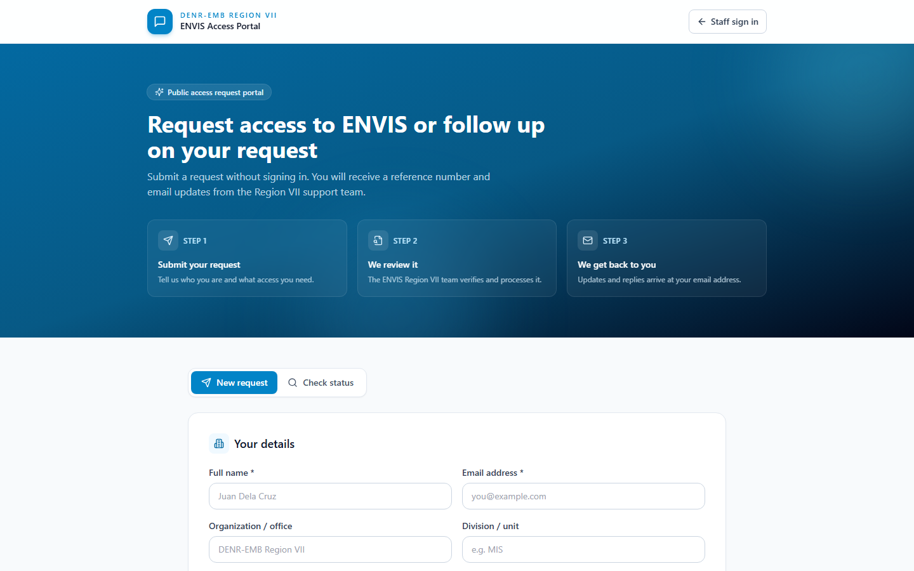
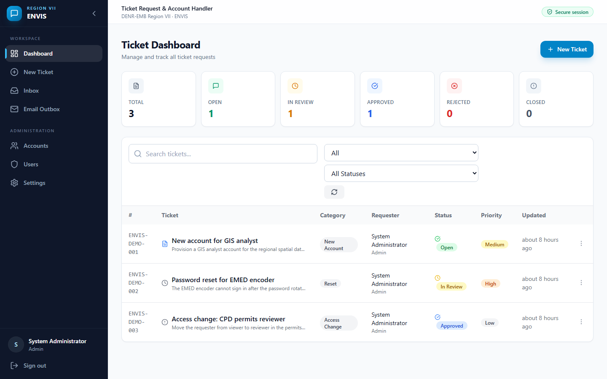
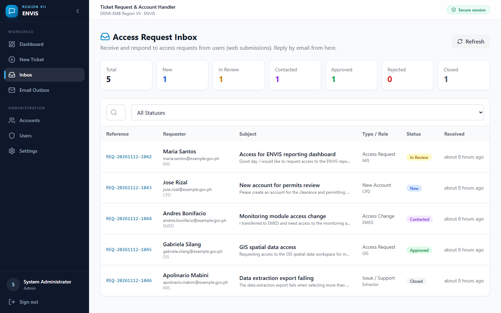
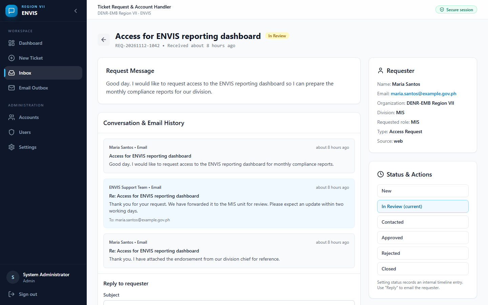
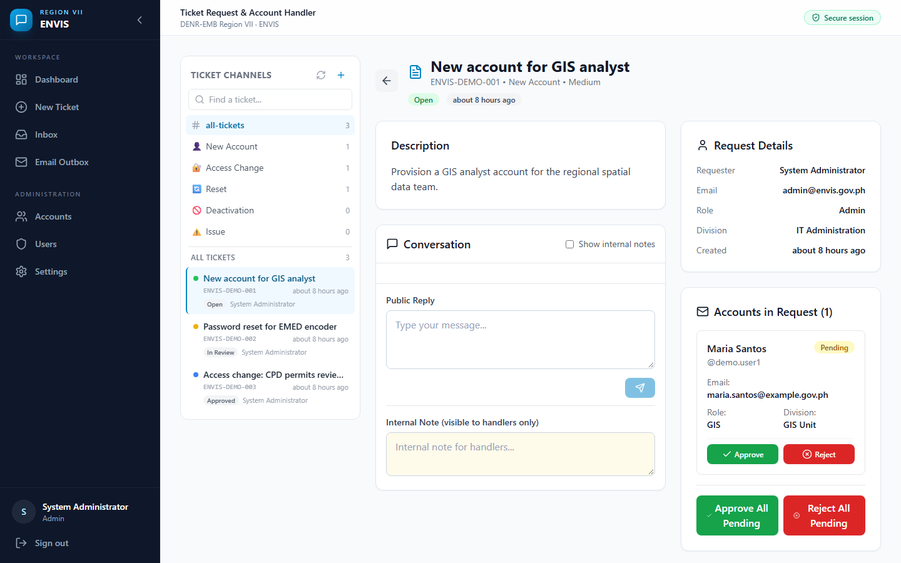

Why It Matters
Access requests often move through chat messages, paper forms, and spreadsheets — making them hard to track, easy to lose, and difficult to audit. This platform brings every request into one accountable workflow.
Single source of truth
Every request, ticket, decision, and message is recorded in one place.
Requester visibility
Reference-number tracking and email updates keep requesters informed.
Controlled actions
Role-based approvals, recorded outcomes, and a complete correspondence trail.
At a Glance
Screenshots from the public portal and staff workspace.





How It Works
The platform supports the complete lifecycle of an ENVIS access request.
- Public intake. A requester submits an access or account request through the public portal and receives a unique reference number.
- Confirmation & notification. The requester receives an email confirmation while the ENVIS team is notified of the new request.
- Inbox triage. Handlers review requests, update status (New → In Review → Contacted → Approved / Rejected / Closed), assign ownership, and reply by email.
- Ticket handling. Internal tickets organize the work; a single ticket can contain multiple account rows, each with its own role, division, and decision.
- Account decisions. Authorized handlers approve or reject accounts individually or in bulk. Approved accounts are provisioned and credentials are delivered by email; rejections include the recorded reason.
- Email correspondence & outbox. Notifications and replies are queued, logged, and traceable, with retry support for failed deliveries.
- Administration. Role-based permissions ensure actions are limited to authorized personnel.
Request Access Guide (Public Users)
For requesters using the public portal — no staff account or sign-in required.
Quick steps
- Open the portal and select New request.
- Enter your details — full name and a valid email address (required).
- Describe the access you need — request type, access/role, subject, and message.
- Submit and save your reference number (e.g.
REQ-YYYYMMDD-####). - Track your request in Check status using your reference number and the same email address.
Download the full manual
For detailed, step-by-step instructions with screenshots, status meanings, and reminders, download the user guide.
Tip: Keep your reference number. Do not include passwords or sensitive credentials in your request message.
Security & Technology
Security & data handling
- No credentials committed to the repository; sensitive configuration managed outside version control.
- Role-based access control, protected routes, and ownership checks.
- Passwords stored as one-way hashes and never exposed through the interface or API.
- Parameterized data access, strict validation, rate limiting, hardened headers, and redacted logs/errors.
- Auditable records of requests, decisions, and correspondence.
Technology
| Layer | Stack |
|---|---|
| Frontend | React, TypeScript, Vite, Tailwind CSS |
| Backend | Node.js, Express, TypeScript |
| Data | SQLite (WAL), parameterized access |
| SMTP via Nodemailer | |
| Auth | JWT sessions with role permissions |